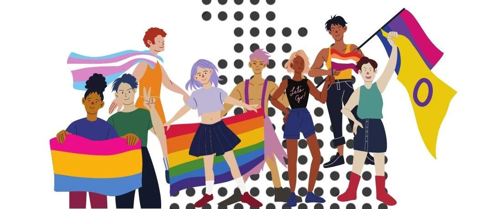

首届季华骄傲节 暨 首届性少数摄影大赛结果公布
“非一般又怎么样，还不是照样，寻找最爱是谁的答案，庸俗地海枯石烂，世俗又凭什么为难，不一样，都一样，有各样的患难，不一样也一样，有分合有聚散，各有各一生一世，也各有各的温柔乡，哦爱不是抽象的信仰，有血有汗…” ——女同性恋题材歌曲《不一样又怎样》蔡依林
作为性少数，生命里有哪些让你终生难忘的骄傲瞬间?
是面对家人时的出柜时刻；
是在公众街区勇于和同性伴侣牵手、接吻与拥抱的时刻；
或许是不同性别气质的玫瑰少年们努力生活的时刻；
又或许是作为跨性别者，敢于面对性别认同的时刻；
也或许是在性少数权益公益机构实习、工作的经历；
还可能是诉求法律平等的时刻……
这些瞬间，因勇敢而珍贵无比！

我们真诚邀请伙伴们分享这些精彩的时刻，把骄傲传递给更多性少数，把正面形象展现给公众。
今年6月份是第54个性少数骄傲月🌈，季华园性少数当时发起主办了“2023首届季华骄傲节 暨 ‘骄傲拍拍:首届性少数摄影大赛’ ”。
我们共收到了来自全国各地的14位参赛者的共计20份参赛作品，参赛人身份多元化，从北到南、从同性恋到跨性别者，作品凸显了性少数群体生存与同志题材摄影。
 （注：季华骄傲节）
（注：季华骄傲节）经过季华园性少数评审，其中14件参赛作品获奖，一等奖1件、二等奖2件、三等奖3件、优秀奖8件；
分别是：
🥇一等奖
水水
🥈二等奖
蓝心、李洋梓
🥉三等奖
宋佳、啵啵小饼、因子
🎊优秀奖
雨落凡尘、郭海飞、大伟、只于飞
丹华Glowe、樊洛延、宫主殿下、柴井
恭喜上叙参赛者的优异摄影作品获奖，同时感动于他们的优秀表现与骄傲精神，感谢他们的参与热情。无论参赛者们是否获奖、获得几等，重要的是能有“骄傲做自己”的精神。

另外，三位获奖者，因子、樊洛延、柴井，工作人员未能取得联系，请于近期主动联系工作人员。
本文编辑：颜
发布：季华骄傲节、性少数摄影大赛
参考资料：综合网络、百度百科、猫书房、城堡、盏灯、北拉拉